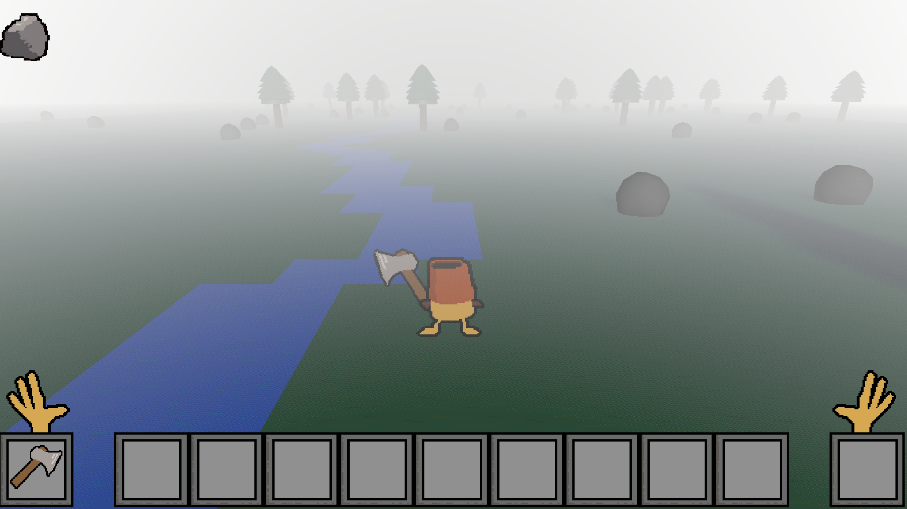
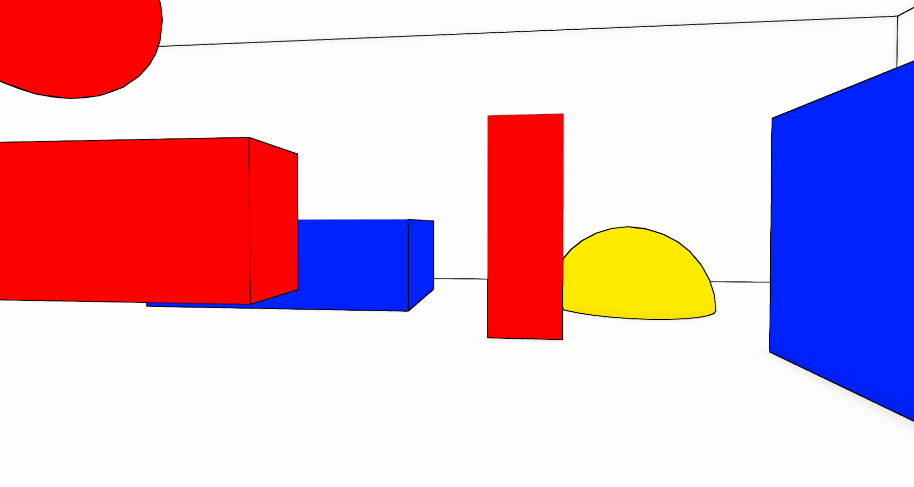
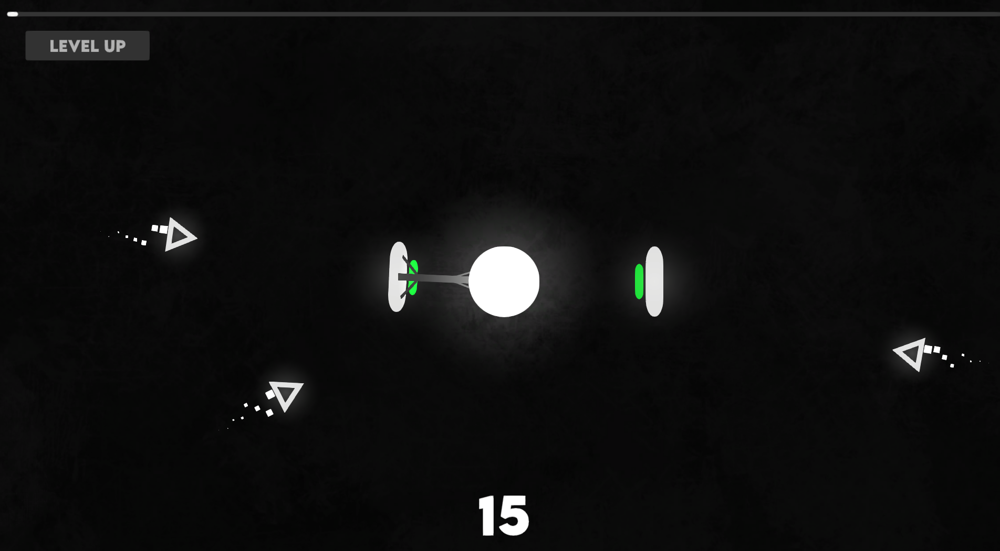

Henry Martin - Technical designer, technical artist and programmer out of Michigan.
About
I'm currently a junior at Michigan State University, studying for both a major in Games and Interactive Media
and in Computer Science and Engineering. Most of my work in game development has been focused on the implementation side,
working with artists and designers to bring their ideas to life. I'm also a research assistant working with the Esports and Games Research Lab at the University of Oregon, with most of
my work concerning the intersection between Esports and STEM majors at universities throughout the country.
Projects
SHOLBUK!
Small survival game made to test data management & implementation of mechanics
interfacing with a large gameworld. Players can extract resources from a 3D environment,
craft new objects, and place those objects in a dynamically updating world.

a screenshot of SHOLBUK!'s procedurally generated gameworld
RIGIDITY
Project designed to test the creation of unique shaders to create a heavily stylized
3D environment, using a combination of a depth-based outline shader and flat, monochromatic
materials to create an aesthetically unique gameworld.

a screenshot of RIGIDITY, showing an outline depth shader & monochrome materials being used to achieve a stylized look
toobik
2D solo project made in a week, with the primary goal being to create a reasonably polished
and complete game within a small timespan. Primary technical challenges included the creation
of an effective roguelike leveling system and efficient UI management.

toobik gameplay - player can rotate shield around to block incoming projectiles from hitting the central circle.